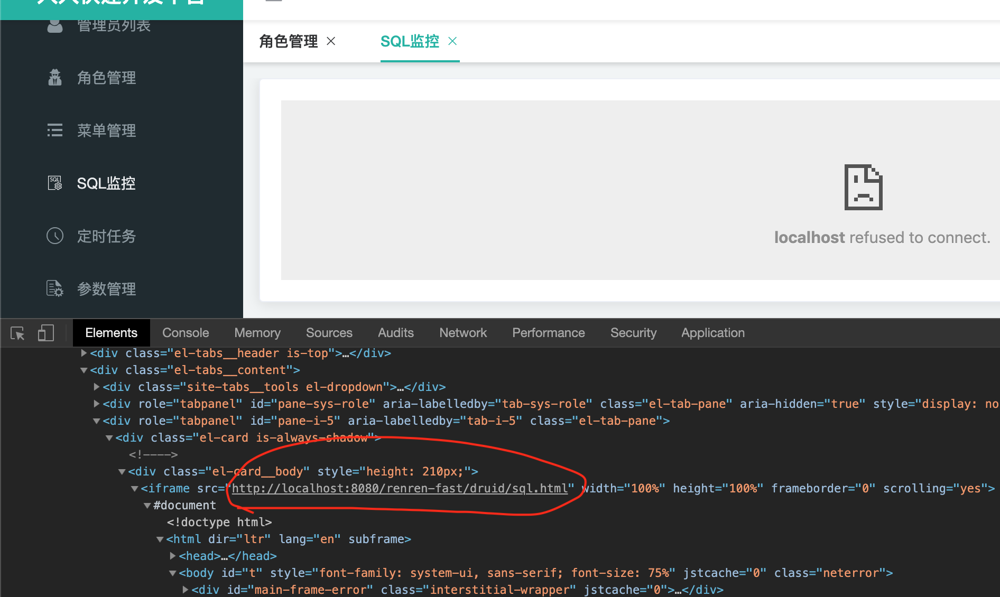
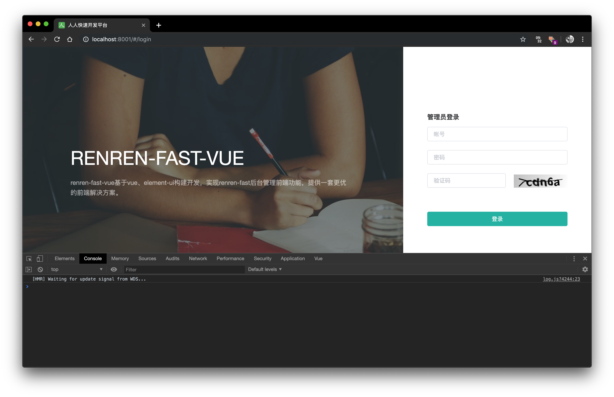
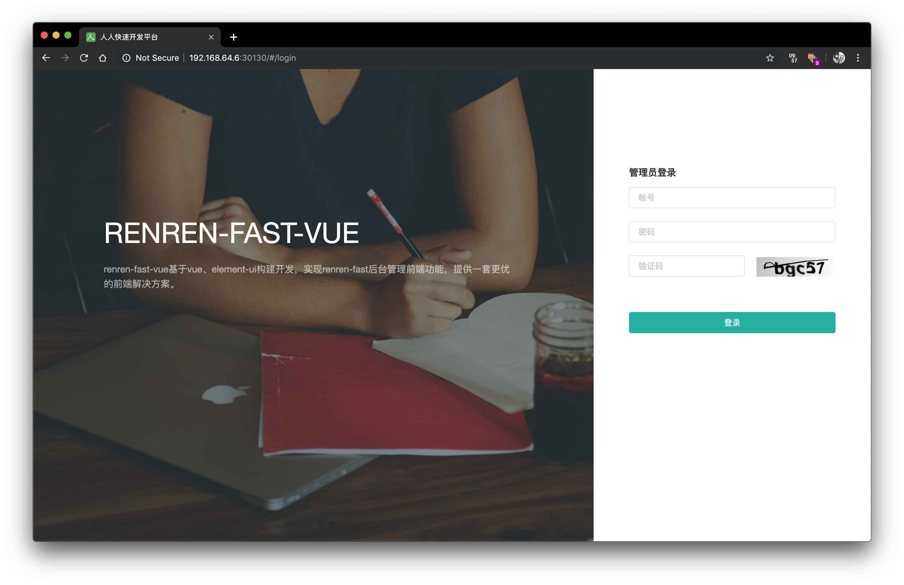
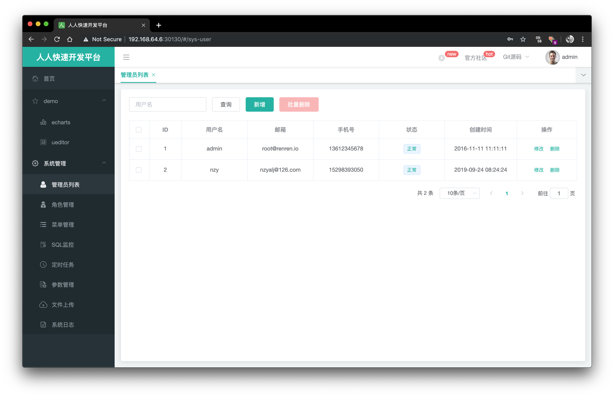

本篇介绍前端的部署
Bug
renren-fast前端界面中关于SQL监控部分的功能不可用，不知道是它代码的问题还是啥，那个链接无法修改

前期准备
请确保实战笔记1-3的内容可以正常运行，且环境参数和之前保持一致
我本机的环境参数
- Docker registry私服地址：192.168.43.205:5000
- 后台服务地址：192.168.64.6:30125，内部的配置信息和笔记3保持一致
部署的项目
renren_fast 提供了前端单页面应用，请按照官网教程将其下载下来
这里摘录重要步骤，保证本地有Node.js安装，且版本大于8
1 | # 克隆项目 |
此时请保证后端服务正常运行，按照我本机的参数，后端服务运行在 192.168.64.6:30125 上
打开项目，将 static/config/index-prod.js （部署环境时用） 以及 static/config/index.js（开发环境时用），修改 window.SITE_CONFIG['baseUrl'] 的值为后端服务器地址，我这里需要做如下修改
1 | window.SITE_CONFIG['baseUrl'] = 'http://192.168.64.6:30125/renren-fast' |
首先先测试一下开发环境是否能正常运行，在项目根目录下执行如下命令
1 | npm run dev |
访问浏览器 localhost:8001，会有页面显示，且可以使用admin（密码同）登录，如果不成功请查看控制台相关报错

项目打包
在根目录下执行如下命令对项目进行打包
1 | npm run build |
打包的文件在 dist 目录下，可以新建立一个文件夹作为存放部署资源的目录 front-end-file-deployment ，并将该文件夹拷贝至其根目录下，建立如果的目录结构
1 | front-end-file-deployment/ |
首先编写 default.conf，这个是Nginx配置文件。这个前端应用准备使用Nginx提供静态文件服务。配置文件内容如下
1 | server { |
下面需要将dist中的内容拷贝到容器内部的 /usr/share/nginx/html 目录下，同时，添加Nginx配置文件至容器内部。编写Dockerfile
1 | FROM nginx:alpine |
在此目录下执行Docker打包命令并推送至私有仓库
1 | docker build -t 192.168.43.205:5000/renren-fast-front-end:1.0 . |
部署Kubernetes
编写Deployment资源配置文件 eployment/front-end-deployment.yaml ，内容如下
1 | apiVersion: apps/v1 |
并用service暴露pod服务，deployment/front-end-service.yaml
1 | apiVersion: v1 |
在项目根目录下执行命令部署资源 kubectl apply -f deployment
执行命令 kubectl get pods 查看部署是否成功
访问 192.168.64.6:30130 （Kubernetes ip地址:30130 ）

